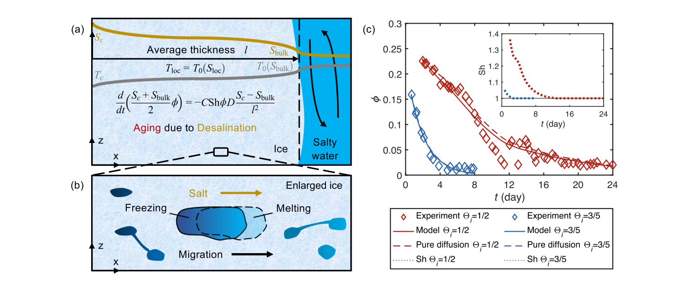

新生海冰为什么会在数天内逐渐致密？
自然对流实验和脱盐模型显示，在所测试的条件下，盐扩散驱动的脱盐可解释多孔冰老化时孔隙率的下降。
Sea Ice Aging by Diffusion-Driven Desalination
研究背景
这篇 PRL 关心的是 sea ice aging 中“多孔盐冰如何慢慢变老”的动力学，而不是只看初始结冰或最终融化。作者指出，一年冰和多年冰的一个关键区别是孔隙率；孔隙率又和盐含量相关，所以脱盐过程会改变冰的热学、力学和环境响应。
已有 mushy layer 理论能描述盐和热输运，也有许多 brine convection 对冰结构影响的研究，但很多实验集中在初始生长阶段，没有追踪 2-3 周的自发老化；近期盐水中冰融化研究常把初始状态设为纯冰，因此没有覆盖 mushy ice 的脱盐老化。本文的核心问题是：在盐水自然对流系统中，新生成的多孔盐冰停止快速长厚之后，孔隙率为什么还会继续下降？
研究方法
实验是准二维垂直自然对流槽：高度 H = 0.24 m，长度 L = 0.12 m，宽度 W = 0.06 m；左侧冷板 Tc、右侧热板 Th 恒温，槽内初始为 NaCl 溶液。作者测 bulk salinity Sbulk，拍摄冰前沿来得到 x 方向平均冰厚 l，并用盐守恒计算空间平均孔隙率 phi。温度影响用初始 superheat 参数
Theta_i = [Th - T0(Sbulk|t=0)] / (Th - Tc)
来归一，其中 T0 是对应盐度下的冰点/融点。
Figure 1 是实验主证据图。它回答“mushy ice 是否真的先快速生长、再进入慢老化”的问题：在 Sbulk|t=0 = 3.44%、Tc = -12.1 °C、Th = 7.9 °C、Theta_i ≈ 1/2 的典型实验中，冰层约 1.5 天达到最大厚度，然后进入 2-3 周的 aging regime。图中 (c) 显示平均厚度只弱下降，(d) 显示 bulk salinity 上升，(e) 显示孔隙率缓慢但明显下降，(f) 的时空图显示内部结构向冰前沿迁移，典型速度约 3.0 mm/day。读图时要注意：Figure 1 给出的是平均量和可视结构迁移，不能直接解析 mushy ice 内部局部速度、温度和盐度场。
具体结果
结果 1：快速结冰之后仍有自发老化
实验观察到两个阶段。第一阶段是热传输主导的快速结冰，约 1.5 天内冰层长到最大厚度；第二阶段是在外部条件不变时发生的慢老化，持续到最终平衡态，大约 2-3 周。老化阶段的平均厚度变化小，说明全局热平衡基本保持；但 bulk salinity 上升、孔隙率下降、冰层逐渐变透明，说明盐分持续从 mushy ice 中排出。
这里的关键不是“冰继续长厚”，而是“多孔盐冰内部的 brine/pore 结构在盐扩散作用下重排和消失”。Figure 1(f) 的结构迁移速度给后面的扩散尺度判断提供了独立观测量。
结果 2：老化时间尺度与盐扩散一致
作者的机制判断基于局部热平衡：热扩散远快于盐扩散，mushy ice 内局部温度等于局部冰点/融点。沿 x 方向的温度梯度对应一个局部盐度梯度；盐向外扩散后，mushy ice 内为维持局部盐度，过量水冻结，导致孔隙率收缩。

Figure 2(a,b) 是机制图：整层冰的盐减少等于扩散和少量对流带走的盐；局部孔结构表现为较冷、较咸一侧冻结，较热、较淡一侧融化，于是孔结构向冰前沿迁移。Figure 2(c) 是定量核心：积分脱盐模型的实线能拟合 Theta_i ≈ 1/2 和 Theta_i ≈ 3/5 两组孔隙率下降；把对流增强去掉、令 Sh = 1 的虚线与实线差别很小，尤其在 Theta_i ≈ 3/5 几乎重合，说明扩散是主导项。
作者给出的盐扩散时间尺度是
tD = l*^2 / D
其中 l* 是老化过程中的时空平均冰厚，D 是 brine 中盐扩散率。典型实验中 tD ≈ 1.1e6 s ≈ 12.7 days，和 Figure 1 中慢老化阶段同量级。Lewis 数 Le = kappa/D ≈ 200，解释了快速结冰和慢老化的时间尺度差异。
结果 3：积分脱盐模型能抓住孔隙率下降
End Matter 从多孔冰内局部盐守恒出发：
partial(Sloc phi_loc)/partial t = div(phi_loc D grad Sloc) - phi_loc u · grad Sloc
直接解局部方程很难，所以作者把冰层内盐总量变化写成积分模型。主文 Eq. (1) 的形式可概括为：
d/dt [ ((Sc + Sbulk)/2) phi ] = - C Sh phi D (Sc - Sbulk) / l^2
其中 Sc 由冷板温度决定，Sbulk 和 l 来自实验，Sh 表示 mushy ice 内对流对传质的增强，C 修正非均匀冰厚和孔隙率。拟合中 Theta_i ≈ 1/2 取 C = 1.1，Theta_i ≈ 3/5 取 C = 2.2。
Sh 的估计为：
Sh = 1 + 0.04 (l/H)^2 Le Ra
其中 Ra 用盐度导致的密度差、渗透率 K、系统高度、热扩散率和运动黏度定义；渗透率 K 用孔隙率经验式估计，并在 phi < 0.054 时取 0。这个模型的物理含义很清楚：孔隙率越低、渗透性越弱，对流传盐越不重要，系统越来越接近扩散控制。
结果 4：最终状态近似致密淡水冰 + well-mixed 盐水
Figure 3 用最终冰前沿形态来验证系统最后像“纯物质凝固”而不是持续的多孔盐冰演化。黄色虚线是实验最终冰前沿，黑色细线是用同样最终盐度和冰点设置的非多孔冰数值模拟；两者在 Theta_i ≈ 1/2 和 Theta_i ≈ 3/5 下都吻合得很好。
这支持作者的判断：最终冰层在实践上可看作致密淡水冰，bulk salty water 变成盐度均匀的 well-mixed 区域；后期浮力主要来自温度差，而不是盐度差。Figure 3 的作用不是证明真实海冰最终必然纯化，而是证明本文实验参数下的 asymptotic state 已从 mushy ice aging 过渡到非多孔冰凝固问题。
关键机制
机制链条可以写成：
热梯度固定局部冰点/盐度关系 -> mushy ice 内形成盐度梯度 -> 盐从冰内向 bulk salty water 扩散 -> 为维持局部热盐平衡，孔隙内一侧冻结、一侧融化 -> 内部孔结构迁移并减少 -> 平均孔隙率下降 -> 长时间后系统趋向致密淡水冰层和混合盐水区。
作者直接证据包括：bulk salinity 上升、孔隙率下降、孔结构迁移速度、扩散时间尺度、积分模型拟合、Sh = 1 与含对流模型差异很小、最终界面形态与非多孔冰模拟一致。推断部分主要是局部形态演化细节，因为作者也承认缺少 mushy ice 内部非侵入式速度、温度、盐度场测量。
适用范围与局限
- 参数范围是实验室准二维垂直自然对流系统，不等同于真实海冰的多层、风浪、日夜/季节热循环、雪盖、盐水排泄和力学破裂环境。
- 对流脱盐在本文参数下是次要项，但作者明确指出真实海冰中 flushing 或更强 brine convection 可加速老化，所以“扩散主导”不能无条件外推到所有海冰场景。
- 模型用积分近似和经验渗透率，
C是拟合修正系数；它适合解释平均孔隙率随时间下降，不足以解析局部孔结构的三维形态演化。 - Figure 3 的非多孔冰模拟是最终状态对比，不是从初始 mushy ice 完整演化到最终状态的全场直接数值模拟。